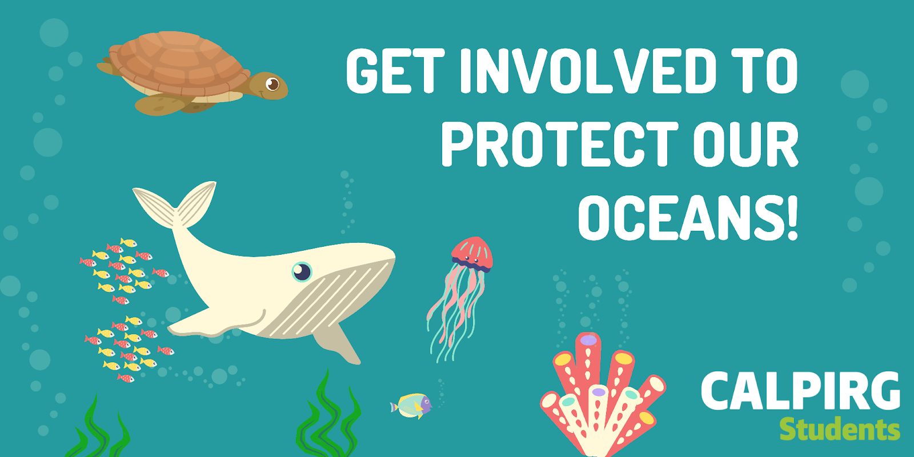

01-intro-to-r
Introduction to R
[ad] CALPIRG
APPLY NOW: Volunteer or Intern to fight plastic pollution or turn out the vote on campus!
CALPIRG Students is a student organization on campus that works to protect the environment, address food insecurity, and promote civic engagement. We helped nearly 10,000 students register to vote in California and got the UCs to release new policy to phase out single-use plastics to protect our oceans! Get involved to protect our oceans!

This Winter, we’re working to protect our oceans. They give us food, provide most of the oxygen we breathe, and are home to awesome biodiversity like whales and sea turtles, but our oceans are at risk from things like overfishing, oil drilling, and pollution. That’s why we’re calling on Governor Newsom to increase protections for marine areas in California!
We’re also working on campaigns addressing hunger & homelessness, fighting plastic pollution, and promoting voter participation.
As a volunteer or intern with CALPIRG you can:
- Build grassroots support
- Work with the media and help organize press conferences with experts and elected officials
- Lobby elected officials
- Plan big events like rallies or a benefit concert
- Learn key nonprofit management and fundraising skills
Learn skills, build your resume, and work with issues that matter. Apply today.
Q&A
Q: Curious about why we’re using RStudio on DataHub instead of running it locally. Are there tasks that require the hardware used in DataHub or can most of the tasks be also done on a laptop?
A: You could run this whole class locally and are free to do so! The one place where you would run into issues is that I assume packages (which have been installed on datahub) are installed. So, you would just have to install those packages before proceeding.
Q: How exactly do students make appointments for the Wednesday office hour? Is it simply through email or is there a separate form?
A: I use Calendly for this. The link to sign up is on Canvas!
Q: I am still not sure how to clone GitHub code into datahub.
A: This will be covered in lab this week!
Q: How will we submit the lab. What will the lab being release and when will it due?
A: Labs, homework, and exams will all be “submitted” by pushing to GitHub (covered in lab on Friday). Once it’s on GitHub, it’s submitted! This weeks lab will be released today. Typically, each week’s lab will be released on Monday of the week it’s due.
Q: Do we need to bring our own computer to lab?
A: Good question! I should have covered this. Lab is in the same room as lecture, so you will need your own computer. If you don’t have one, please reach out to me or campus resources (listed in the syllabus) and I’ll see what I can do!
Q: After class today, I am a little confused on how we will be writing code for assignments. Will we be doing everything through RStudio once we have opened DataHub, or will there be a cell format similar to Jupyter Notebooks when using Python? In other words, can we expect all of our assignments to be conducted in RStudio as we did today?
A: The code you submit will typically be in R Markdown documents (discussing more today!) These are similar to Jupyter Notebooks. And yes, everything can be done in RStudio as demo-ed on Tuesday.
Q: I know you mentioned R has changed since you last used it. Would it be possible for you to share any resources or materials that you and other R practitioners find useful. I.E. Frameworks/Conventions/Blogs. A: Ah, so I meant to say that R has changed since I first used it many years ago. I have continued to use and learn R since then! I’ve never stopped using R. That said, I have/know of TONS of resources. Two big compilations I can recommend are: learnr4free and the Big Book of R. If there’s something specific you’re interested, feel free to let me know and I can point to more specific resources!
Q: I’m anxious to learn Github - have put it off for most of my programming life. It seems so complicated! :(
A: It is complicated, but that’s b/c it’s doing something REALLY hard. That said, the basics are not too complicated. So this course will force you to learn the basics, and then you’ll be on your way to learn the harder stuff!
Q: Could you talk about the prevalence of R in industry (use cases / types of jobs / etc.)? My general understanding of it is that it’s kind of out the door when compared to Python.
A: Yes! I’ll try to discuss this more throughout the course, but R is super popular among data scientists, particularly those who have a focus in statistics, biological data (bioinformatics), econometrics, data analysis, and/or data journalism. If you’re trying to do data engineering, you likely won’t see/use R, but if you’re analyzing and visualizing data in your job, you’re likely to encounter R. That said, Python is certainly a more popular language. That’s why I/we teach it in our intro programming course!
Course Announcements
Due Dates:
- Lab 01 due tomorrow (Friday) 11:59 PM
- Lecture Participation survey “due” after class (both Tu and today’s lectures available)
- Student survey “due” Sunday (1/15) 11:59 PM
Update: Lab will be podcast but restricted to UCSD students and will not be archived.
Agenda
- Variables
- Operators
- Data in R
- RMarkdown
Variables & Assignment
Variables & Assignment
Variables are how we store information so that we can access it later.
Variables are created and stored using the assignment operator <- 1
first_variable <- 3The above stores the value 3 in the variable first_variable
This means that if we ever want to reference the information stored in that variable later, we can “call” (mean, type in our code) the variable’s name:
first_variable[1] 3Variable Type
- Every variable you create in R will be of a specific type.
- The type of the variable is determined dynamically on assignment.
- Determining the type of a variable with
class():
class(first_variable)[1] "numeric"Basic Variable Types
| Variable Type | Explanation | Example |
|---|---|---|
| character | stores a string | "cogs137", "hi!" |
| numeric | stores whole numbers and decimals | 9, 9.29 |
| integer | specifies integer | 9L (the L specifies this is an integer) |
| logical | Booleans | TRUE, FALSE |
| list | store multiple elements | list(7, "a", TRUE) |
There are many more. We’ll get to some but not all in this course.
logical & character
logical - Boolean values TRUE and FALSE
class(TRUE)[1] "logical"character - character strings
class("hello")[1] "character"class('students') # equivalent...but we'll use double quotes![1] "character"numeric: double & integer
double - floating point numerical values (default numerical type)
class(1.335)[1] "numeric"class(7)[1] "numeric"integer - integer numerical values (indicated with an L)
class(7L)[1] "integer"lists
So far, every variable has been an atomic vector, meaning it only stores a single piece of information.
Lists are 1d objects that can contain any combination of R objects
mylist <- list("A", 7L, TRUE, 18.4)
mylist[[1]]
[1] "A"
[[2]]
[1] 7
[[3]]
[1] TRUE
[[4]]
[1] 18.4str(mylist)List of 4
$ : chr "A"
$ : int 7
$ : logi TRUE
$ : num 18.4Your Turn
Define variables of each of the following types: charachter, numeric, integer, logical, list
Put a green sticky on the front of your computer when you’re done. Put a pink if you want help/have a question.
Functions
class()(andView()&median()) were our first functions…but we’ll show a few more.
- Functions are (most often) verbs, followed by what they will be applied to in parentheses.
Functions are:
- available from base R
- available from packages you import
- defined by you
We’ll start by getting comfortable with available functions, but in a few days, you’ll learn how to write your own!
Helpful Functions
class()- determine high-level variable type
class(mylist)[1] "list"length()- determine how long an object is
# contains 4 elements
length(mylist)[1] 4str()- display the structure of an R object
str(mylist)List of 4
$ : chr "A"
$ : int 7
$ : logi TRUE
$ : num 18.4Coercion
R is a dynamically typed language – it will happily convert between the various types without complaint.
c(1, "Hello")[1] "1" "Hello"c(FALSE, 3L)[1] 0 3c(1.2, 3L)[1] 1.2 3.0Missing Values
R uses NA to represent missing values in its data structures.
class(NA)[1] "logical"Other Special Values
NaN | Not a number
Inf | Positive infinity
-Inf | Negative infinity
Activity
What is the type of the following vectors? Chat about why they have that type.
c(1, NA+1L, "C")c(1L / 0, NA)c(1:3, 5)c(3L, NaN+1L)c(NA, TRUE)
Put a green sticky on the front of your computer when you’re done. Put a pink if you want help/have a question.
Operators
Operators
At its simplest, R is a calculator. To carry out mathematical operations, R uses operators.
Arithmetic Operators
| Operator | Description |
|---|---|
+ |
addition |
- |
subtraction |
* |
multiplication |
/ |
division |
^ or ** |
exponentiation |
x %% y |
modulus (x mod y) 9%%2 is 1 |
x %/% y |
integer division 9%/%2 is 4 |
Arithmetic Operators: Examples
7 + 6 [1] 132 - 3[1] -14 * 2[1] 89 / 2[1] 4.5Reminder
Output can be stored to a variable
my_addition <- 7 + 6my_addition[1] 13Comparison Operators
These operators return a Boolean.
| Operator | Description |
|---|---|
< |
less than |
<= |
less than or equal to |
> |
greater than |
>= |
greater than or equal to |
== |
exactly equal to |
!= |
not equal to |
Comparison Operators: Examples
4 < 12[1] TRUE4 >= 3[1] TRUE6 == 6[1] TRUE7 != 6[1] TRUEYour Turn
Use arithmetic and comparison operators to store the value 30 in the variable var_30 and TRUE in the variable true_var.
Put a green sticky on the front of your computer when you’re done. Put a pink if you want help/have a question.
R Packages
Packages
- Packages are installed with the
install.packagesfunction and loaded with thelibraryfunction, once per session:
install.packages("package_name")
library(package_name)In this course, most packages we’ll use have been installed for you already on datahub, so you will only have to load the package in (using library).
Data “sets”
Data “sets” in R
“set” is in quotation marks because it is not a formal data class
A tidy data “set” can be one of the following types:
tibbledata.frame
We’ll often work with
tibbles:readrpackage (e.g.read_csvfunction) loads data as atibbleby defaulttibbles are part of the tidyverse, so they work well with other packages we are using- they make minimal assumptions about your data, so are less likely to cause hard to track bugs in your code
Data frames
A data frame is the most commonly used data structure in R, they are list of equal length vectors (usually atomic, but can be generic). Each vector is treated as a column and elements of the vectors as rows.
A tibble is a type of data frame that … makes your life (i.e. data analysis) easier.
Most often a data frame will be constructed by reading in from a file, but we can create them from scratch.
df <- tibble(x = 1:3, y = c("a", "b", "c"))
class(df)[1] "tbl_df" "tbl" "data.frame"glimpse(df)Rows: 3
Columns: 2
$ x <int> 1, 2, 3
$ y <chr> "a", "b", "c"Data frames (cont.)
attributes(df)$class
[1] "tbl_df" "tbl" "data.frame"
$row.names
[1] 1 2 3
$names
[1] "x" "y"Columns (variables) in data frames are accessed with $:
dataframe$var_nameclass(df$x) # access variable type for column[1] "integer"class(df$y) [1] "character"Variable Types
Data stored in columns can include different kinds of information…which would require a different type (class) of variable to be used in R.

R Data Types:
- Continuous: numeric, integer
- Discrete: factors (we haven’t talked about these yet, but will today!)
Artwork by @allison_horst
Variable Types (cont.)
Sometimes data are non-numeric and store words. Even when that is the case, the data can be conveying different information.

R Data Types:
- Nominal: character
- Ordinal: factors
- Binary: logical OR numeric OR factors 😱
Artwork by @allison_horst
Example: Cat lovers
A survey asked respondents their name and number of cats. The instructions said to enter the number of cats as a numerical value.
🚨 There is code ahead that we’re not going to discuss in detail today, but we will in coming lectures.
cat_lovers <- read_csv("https://raw.githubusercontent.com/COGS137/datasets/main/cat-lovers.csv")The Data
cat_lovers |>
datatable()The Question
How many respondents have a below average number of cats?
Giving it a first shot…
cat_lovers |>
summarise(mean = mean(number_of_cats))Warning: There was 1 warning in `summarise()`.
ℹ In argument: `mean = mean(number_of_cats)`.
Caused by warning in `mean.default()`:
! argument is not numeric or logical: returning NA# A tibble: 1 × 1
mean
<dbl>
1 NA💡 maybe there is missing data in the number_of_cats column!
Oh why will you still not work??!!
cat_lovers |>
summarise(mean_cats = mean(number_of_cats, na.rm = TRUE))Warning: There was 1 warning in `summarise()`.
ℹ In argument: `mean_cats = mean(number_of_cats, na.rm = TRUE)`.
Caused by warning in `mean.default()`:
! argument is not numeric or logical: returning NA# A tibble: 1 × 1
mean_cats
<dbl>
1 NA💡What is the type of the number_of_cats variable?
Take a breath and look at your data
glimpse(cat_lovers)Rows: 60
Columns: 3
$ name <chr> "Bernice Warren", "Woodrow Stone", "Willie Bass", "Tyro…
$ number_of_cats <chr> "0", "0", "1", "3", "3", "2", "1", "1", "0", "0", "0", …
$ handedness <chr> "left", "left", "left", "left", "left", "left", "left",…Let’s take another look
Sometimes you need to babysit your respondents
cat_lovers |>
mutate(number_of_cats = case_when(
name == "Ginger Clark" ~ 2,
name == "Doug Bass" ~ 3,
TRUE ~ as.numeric(number_of_cats))) Warning: There was 1 warning in `mutate()`.
ℹ In argument: `number_of_cats = case_when(...)`.
Caused by warning:
! NAs introduced by coercion# A tibble: 60 × 3
name number_of_cats handedness
<chr> <dbl> <chr>
1 Bernice Warren 0 left
2 Woodrow Stone 0 left
3 Willie Bass 1 left
4 Tyrone Estrada 3 left
5 Alex Daniels 3 left
6 Jane Bates 2 left
7 Latoya Simpson 1 left
8 Darin Woods 1 left
9 Agnes Cobb 0 left
10 Tabitha Grant 0 left
# … with 50 more rowsAlways respect (& check!) data types
cat_lovers |>
mutate(number_of_cats = case_when(
name == "Ginger Clark" ~ "2",
name == "Doug Bass" ~ "3",
TRUE ~ number_of_cats),
number_of_cats = as.numeric(number_of_cats)) |>
summarise(mean_cats = mean(number_of_cats))# A tibble: 1 × 1
mean_cats
<dbl>
1 0.817Now that we know what we’re doing…
cat_lovers <- cat_lovers |>
mutate(number_of_cats = case_when(
name == "Ginger Clark" ~ "2",
name == "Doug Bass" ~ "3",
TRUE ~ number_of_cats),
number_of_cats = as.numeric(number_of_cats))… store your data in a variable (here we’re overwriting the old cat_lovers tibble).
Moral of the story
If your data does not behave how you expect it to, type coercion upon reading in the data might be the reason.
Go in and investigate your data, apply the fix, save your data, live happily ever after.
R Markdown
R Markdown: tour
Before we move on…
What is the Bechdel test?
The Bechdel test asks whether a work of fiction features at least two women who talk to each other about something other than a man, and there must be two women named characters.
Concepts introduced:
- Knitting documents
- R Markdown and (some) R syntax
Giving the demo a go…
- Navigate to the demo URL (on Canvas)
- Accept the “assignment” (this is NOT graded)
- Clone the repo
- Edit the document
- Knit the document
- Push your changes
Try to play around with this after finishing your lab tomorrow!
Recap
- Always best to think of data as part of a tibble
- This plays nicely with the
tidyverseas well - Rows are observations, columns are variables
- This plays nicely with the
- What are the common variable types in R
- How do I create a variable of each type?
- When would I use each one?
- Do I know how to determine the class/type of a variable?
- Can I explain dynamic typing?
- Can I operate on variables and values using…
- arithmetic operators?
- comparison operators?
- What are dataframes/tibbles? and why are they useful?
- What is the difference between installing and loading a package?
- What are the components of an R Markdown file?
Footnotes
Other programming languages use
=for assignment. R also uses that for assignment, but it is more typical to see<-in R code, so we’ll stick with that.↩︎